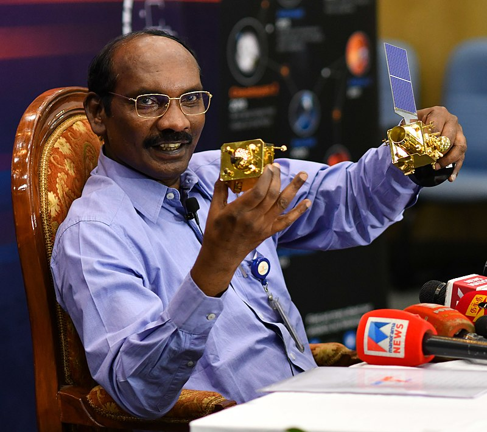

Kailasavadivoo Sivan
Chairman of Indian Space Research Organisation and Space Commission

Here's a time line of K. Sivan life:
- Born- Kailasavadivoo Sivan 14 April 1957 (age 64) Mela Sarakkalvilai, Kanyakumari District, Tamil Nadu, India
- Education-Madurai University (B.Sc.) Madras Institute of Technology (B.Tech) IISc, Bangalore (M.E.) IIT, Bombay (Ph.D).
- Career - Sivan worked on the design and development of launch vehicles for Indian Space Research Organisation (ISRO).
Sivan joined ISRO in 1982 to participate on the Polar Satellite Launch Vehicle (PSLV) Project.
He was appointed as the director of ISRO's Liquid Propulsion Systems Centre on 2 July 2014.
He was conferred Doctor of Science (Honoris Causa) from Sathyabama University, Chennai in April 2014.
On 1 June 2015, he became the Director of Vikram Sarabhai Space Centre.
Sivan was appointed the chief of ISRO in January 2018 and he assumed office on 15 January.
Under his chairmanship, ISRO launched Chandrayaan 2, the second mission to the moon on
July 22, 2019, Vikram rover crashed, but the orbiter is fine and orbiting the moon.
On December 30, his chairmanship was extended by a year to January 2022. His early tenure
was up to January 2021. - Awards - 1) Dr. A.P.J. Abdul Kalam Award, 2019.
2) IEEE Simon Ramo Medal, shared with Byrana N. Suresh, 2020. - Early life -Sivan was born in Mela Sarakkalvilai, near Nagercoil in Kanyakumari district of Tamil Nadu
state of India. His parents are Kailasa Vadivu and mother Chellam